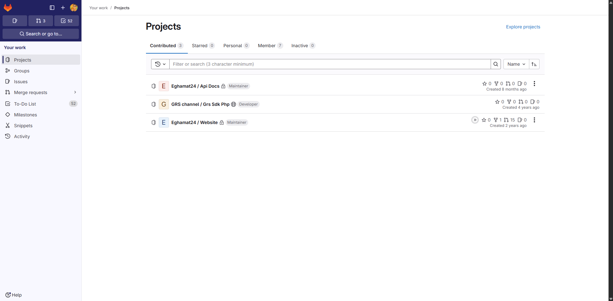
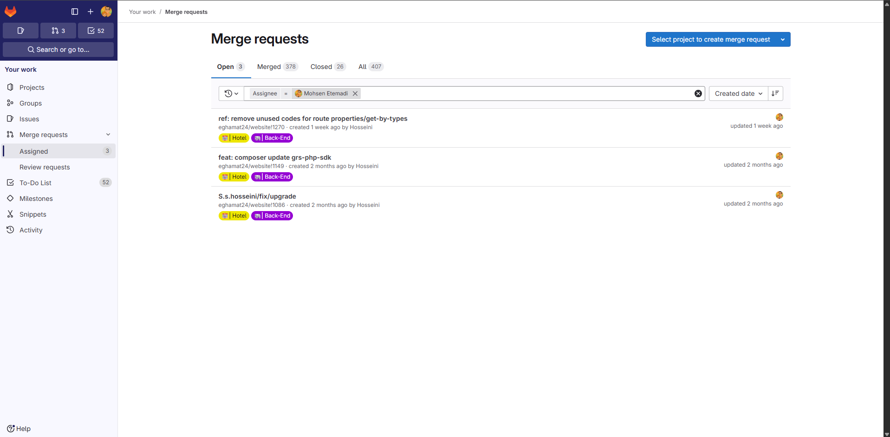
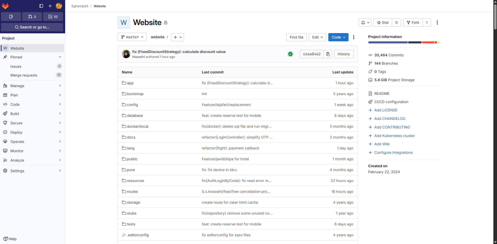
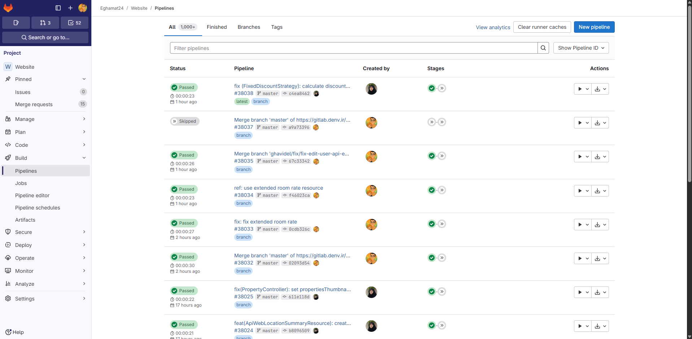

GitLab یک پلتفرم یکپارچه DevOps است که تمام مراحل توسعه نرمافزار را
— از نوشتن کد تا تست خودکار، بازبینی همکاران، استقرار روی سرور، و حتی پایش امنیت —
در یک ابزار واحد جمع میکند. بهبیان سادهتر: همانجایی است که تیم توسعه شما
روزانه چندین بار به آن سر میزند و حاصل کارشان آنجا جمع میشود.
تشبیه ساده برای صاحب کسبوکار: اگر شرکت شما یک کارخانه تولید نرمافزار است،
GitLab خط تولید آن کارخانه است. مواد اولیه (ایدهها و کدها) از یک طرف وارد میشوند،
چند ایستگاه بازرسی و کنترل کیفیت طی میکنند، و در نهایت محصول نهایی (نسخه جدید سایت)
به دست مشتری میرسد. بدون این خط تولید، توسعه یعنی هرجومرج.
تفاوت GitLab با Sentry و Grafana
ابزار
پاسخ به چه سؤالی؟
زمان استفاده
GitLab
چه چیزی قرار است ساخته شود؟
قبل از انتشار · زمان توسعه
Grafana
زیرساخت من الان چه حالی دارد؟
بعد از انتشار · لحظهای
Sentry
چه باگی در کد رخ داد؟
بعد از انتشار · واکنشی
چرا یک صاحب کسبوکار باید به GitLab اهمیت بدهد؟
۰۱ · کاهش ریسک
هیچ کدی بدون بازبینی منتشر نمیشود
از طریق Merge Request هیچ توسعهدهندهای نمیتواند بهتنهایی تغییری در سایت اصلی
ایجاد کند. حداقل یک نفر دیگر باید تأیید کند. این یعنی کاهش چشمگیر باگهای ناشی از
اشتباه فردی.
۰۲ · سرعت تحویل
انتشار خودکار با CI/CD
بهجای انتشار دستی که ممکن است ساعتها طول بکشد و باعث خطا شود، Pipelineها
خودکار تست و استقرار را در دقایق انجام میدهند.
۰۳ · حفظ دارایی
کد شما یک دارایی است
کد منبع، مهمترین دارایی فنی کسبوکار شماست. GitLab تاریخچه کامل، نسخهها و
دسترسیهای کنترلشده را نگه میدارد. اگر کسی برود، دانش از بین نمیرود.
۰۴ · شفافیت برای مدیریت
دید کامل به جریان کار
چه کسی روی چه چیزی کار میکند؟ چند تغییر هفته گذشته منتشر شد؟ چه بخشهایی
بیشتر تغییر میکنند؟ همه اینها از داشبورد GitLab قابل مشاهده است.
قابلیتهای اصلی GitLab
قابلیت
ارزش برای کسبوکار
Source Code Management
نگهداری کد با تاریخچه کامل تغییرات و امکان بازگشت به هر نسخه
Merge Requests
فرآیند بازبینی همکاران قبل از ادغام تغییرات
CI/CD Pipelines
تست خودکار، build و استقرار با هر تغییر
Permissions & Roles
کنترل دسترسی (Maintainer، Developer، Reporter) برای حفظ امنیت
۰۲ تصویر اول: صفحه Projects (پروژههای من)
این صفحه نقطه ورود هر عضو تیم به GitLab است. لیست پروژههایی که کاربر در آنها
مشارکت دارد به همراه نقش هر فرد در هر پروژه نمایش داده میشود.

تصویر ۱. فهرست پروژههای تحت همکاری کاربر
قابلیتهای GitLab که در این صفحه دیده میشوند
Role-Based Access
دسترسی بر اساس نقش
Maintainer، Developer، Reporter و Guest — هر یک سطح دسترسی متفاوتی دارند.
یک کارآموز نمیتواند کد production را تغییر دهد.
Project Visibility
عمومی / خصوصی / داخلی
هر پروژه میتواند private (فقط اعضا)، internal (همه افراد سازمان) یا public
(همه دنیا) باشد. کنترل کامل بر دسترسی به مالکیت فکری.
Activity Sidebar
میانبرهای سریع
نوار کناری نشان میدهد: ۳ Merge Request باز، ۵۲ تسک To-Do. کاربر در یک نگاه
میداند چه چیزی منتظر اوست.
Project Stats
آمار سریع کنار هر پروژه
ستارهها، Fork، MR، Issue کنار هر پروژه. ارزیابی فعالیت پروژه در یک نگاه.
۰۳ تصویر دوم: Merge Requests (درخواستهای ادغام)
Merge Request مهمترین مفهوم GitLab از منظر کسبوکار است. هر تغییر در کد،
قبل از ورود به نسخه اصلی، باید بهصورت یک «درخواست ادغام» مطرح شود تا
دیگران ببینند، نظر بدهند و تأیید کنند. این فرآیند ضامن کیفیت است.

تصویر ۲. سه Merge Request باز اختصاصدادهشده به کاربر
3باز (Open)
378ادغامشده (Merged)
26بستهشده (Closed)
407مجموع
قابلیتهای GitLab که در این صفحه استفاده شدهاند
Code Review Workflow
فرآیند بازبینی کد
هر MR یک صفحه دارد که دیگران در آن کامنت میگذارند، تغییرات را مقایسه میکنند
و در نهایت Approve یا Reject میکنند. هیچ کدی بدون چشم دوم وارد محصول نمیشود.
Assignee & Reviewer
واگذاری و بازبینی
هر MR یک «مسئول» و یک «بازبین» دارد. فیلتر «Assignee = Mohsen Etemadi» نشان میدهد
همه MRها به این کاربر اختصاص داده شدهاند.
Labels
برچسبگذاری
Hotel، Back-End و امثال اینها به دستهبندی و فیلتر کمک میکنند. مدیر میتواند
ببیند چقدر کار روی هر ماژول در حال انجام است.
Branch Naming
نامگذاری استاندارد شاخهها
ref:, feat:, fix: پیشوندهای استاندارد
نوع تغییر (Refactor, Feature, Bug Fix) را مشخص میکنند. این یعنی فقط با خواندن
عنوان میتوان فهمید چه نوع تغییری است.
Time Tracking
پیگیری زمانی
هر MR تاریخ ایجاد و آخرین بهروزرسانی دارد (مثلاً «updated 2 months ago»).
این به شناسایی MRهای راکد کمک میکند.
تأثیر مستقیم بر کسبوکار
دو MR که ۲ ماه باز ماندهاند سرمایهگذاری انجامشده اما بهثمر نرسیده تیم هستند.
ساعتها زمان توسعهدهنده روی آنها صرف شده ولی نتیجهای به مشتری نرسیده. مدیر
میتواند با یک جلسه ۱۵ دقیقهای تصمیم بگیرد: ادغام شوند، تکمیل شوند، یا بسته شوند.
هر سه گزینه بهتر از «بلاتکلیف ماندن» است.
۰۴ تصویر سوم: داخل پروژه Website
وقتی روی پروژه Website کلیک میکنیم، وارد قلب اصلی توسعه میشویم. این صفحه
آخرین وضعیت کد، آخرین کامیت، ساختار پوشهها و اطلاعات کلی پروژه را نشان میدهد.

تصویر ۳. نمای داخلی پروژه Website با ساختار پوشهها
30,464Commits
144Branches
5.8 GiBProject Storage
15MR باز
قابلیتهای GitLab که در این صفحه دیده میشوند
File Browser
مرورگر فایلها
مرور ساختار پروژه بدون نیاز به کلون کردن. هر پوشه و فایل قابل مشاهده است،
همراه با آخرین کامیتی که آن را تغییر داده.
Branch Selector
انتخاب شاخه
منوی master امکان تغییر به هر یک از ۱۴۴ شاخه را میدهد —
برای دیدن وضعیت یک فیچر در حال توسعه.
Commit History
تاریخچه کامیتها
دکمه History نمایش کامل تاریخچه. میتوان دید چه کسی، چه زمانی، چه تغییری داده.
برای کسبوکار: امکان حسابرسی و پاسخ به سؤال «چه کسی این کار را کرد؟».
Pipeline Status
وضعیت آخرین Pipeline
چکمارک سبز کنار commit نشان میدهد تستهای خودکار موفق بودهاند. یک علامت
ساده ولی حیاتی.
Project Sidebar
منوی Manage / Plan / Code / Build...
دسترسی سریع به همه بخشهای پروژه: مدیریت اعضا، برنامهریزی، کد، CI/CD، امنیت،
استقرار، عملیات، تحلیل و تنظیمات.
Quick Actions
Find file / Edit / Code
جستجوی فایل، ویرایش آنلاین، کلون کردن یا دانلود کد در یک کلیک.
Integrations
اتصال به سایر سرویسها
گزینههای Add LICENSE، Add Wiki، Add Kubernetes cluster و Configure Integrations
امکان توسعه قابلیتهای پروژه را میدهند.
تأثیر مستقیم بر کسبوکار
۳۰ هزار کامیت تاریخچه قابل بازگشت یعنی بیمه برای کسبوکار شما.
اگر فردا یک تغییر اشتباه باعث خرابی سایت شود، میتوان دقیقاً به همان کامیت قبلی
برگشت و عملیات را ادامه داد. بدون GitLab، یک اشتباه میتواند ساعتها downtime
به همراه داشته باشد.
۰۵ تصویر چهارم: CI/CD Pipelines (خط لوله تولید)
Pipeline قلب اتوماسیون GitLab است. هر بار که یک توسعهدهنده کدی تغییر میدهد،
یک Pipeline بهصورت خودکار اجرا میشود: تستها، بررسی کیفیت کد، build و در صورت
موفقیت، استقرار. این فرآیند که در گذشته دستی و چندساعته بود، در GitLab فقط چند ثانیه
طول میکشد.

تصویر ۴. آخرین Pipelineهای پروژه Website
+1,000کل Pipelineها
~25sمیانگین زمان اجرا
7/8Passed در تصویر
قابلیتهای GitLab که در این صفحه استفاده شدهاند
Auto Pipeline Trigger
اجرای خودکار با هر کامیت
هیچکس نیاز نیست دستی چیزی را اجرا کند. هر push به سرور، یک Pipeline میسازد.
Stages
مراحل Pipeline
هر Pipeline چند Stage دارد (build، test، deploy). آیکونهای دایرهای کنار هر
ردیف وضعیت هر Stage را نشان میدهند.
Status Filtering
All / Finished / Branches / Tags
فیلتر سریع برای دیدن فقط Pipelineهای موفق، فقط آنها که روی Branchها اجرا شدهاند،
یا فقط روی Tagهای ریلیز.
Pipeline Analytics
تحلیل Pipelineها
دکمه «View analytics» نمودارهایی از نرخ موفقیت، زمان اجرا و روند زمانی Pipelineها
نشان میدهد.
Manual Trigger
اجرای دستی Pipeline
دکمه «New pipeline» امکان اجرای دستی Pipeline روی هر شاخهای را میدهد —
برای تستهای ویژه یا استقرار اضطراری.
Cache Management
مدیریت Cache
«Clear runner caches» برای حالاتی که Pipeline به دلیل cache قدیمی نتایج اشتباه
میدهد.
Artifacts
خروجیهای Pipeline
هر Pipeline میتواند فایلهایی تولید کند (مثل گزارش تست، فایل build).
اینها قابل دانلود و نگهداری هستند.
تأثیر مستقیم بر کسبوکار
تصور کنید هر بار که میخواهید نسخه جدیدی منتشر کنید، یک نفر باید ۲ ساعت دستی
تست بگیرد، فایل را روی سرور آپلود کند، تنظیمات را بهروز کند و... این یعنی هر
روز فقط ۱ یا ۲ بار میتوانید تغییر منتشر کنید. با Pipelineهای GitLab،
هر چند ساعت یک بار میتوانید تغییر منتشر کنید،
با ریسک بهمراتب کمتر. این یعنی سرعت بیشتر در پاسخ به نیاز بازار.